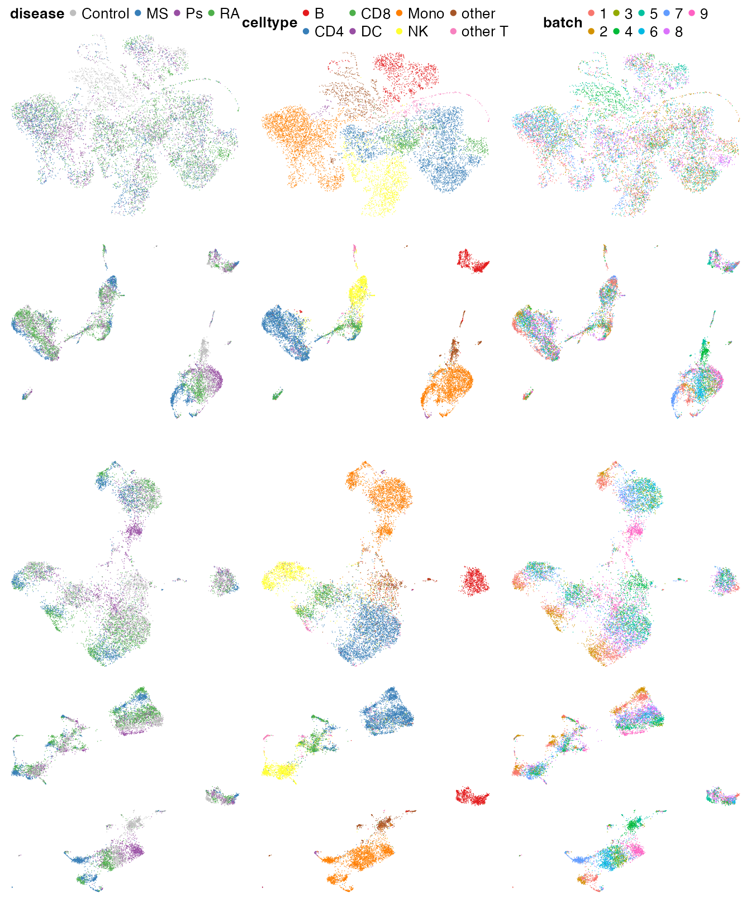
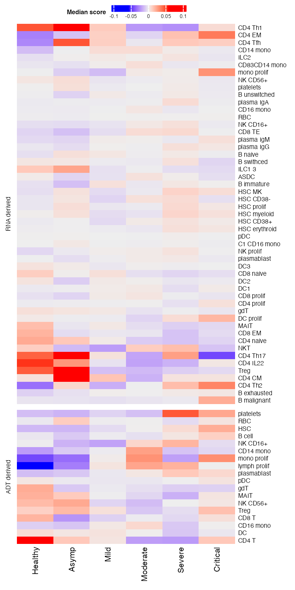
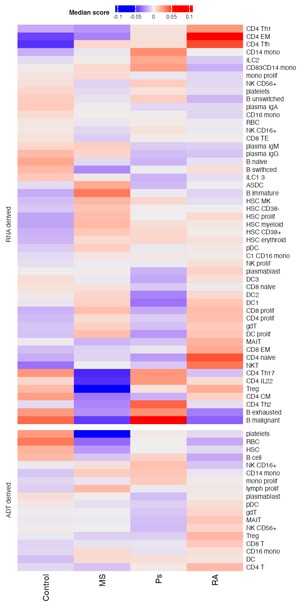
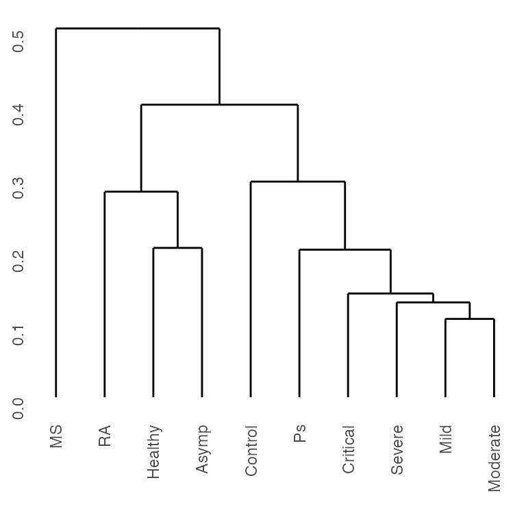

CITE-seq.RmdCITE-seq (single-cell RNA + surface protein) reference and CITE-seq query
Leveraging RNA and protein to define cell states in COVID-19 patients
Differential enrichment of cell populations in disease conditions
Cellular indexing of transcriptomes and epitopes by sequencing (CITE-seq) sequences gene expression and surface proteins. Surface protein expression provides important information about immune activities, eg serving as markers for immune cell types. The RNA modality of CITE-seq provides similar whole-transcriptome throughput as scRNA-seq; the protein modality provides measurement of 10–300 proteins (more recent datasets typically contain >100 proteins).
Surface proteins are uniquely identified by antibody-derived tags (ADTs) in CITE-seq. Hence it’s common to refer to the protein modality as ADT.
In this case study we will apply PhiSpace to integrate two CITE-seq datasets from two cohorts of COVID-19 patients.
The reference dataset contained samples from COVID patients with different disease severity, ranging from asymptotic to critical; the query dataset contained samples from samples from severe COVID patients with different pre-existing autoimmune conditions, including multiple sclerosis (MS), psoriasis (Ps) and rheumatoid arthritis (RA). The question we ask is how different cell types are enriched in different disease condtions (COVID severity and COVID+autoimmune condition).
Processed data and additional R code needed to run this vignette can be downloaded here.
suppressPackageStartupMessages(library(PhiSpace))
suppressPackageStartupMessages(library(vizOmics))
suppressPackageStartupMessages(library(ggplot2))## Warning: package 'ggplot2' was built under R version 4.5.2
suppressPackageStartupMessages(library(dplyr))
suppressPackageStartupMessages(library(magrittr))
suppressPackageStartupMessages(library(ggpubr))
suppressPackageStartupMessages(library(tidyr))
suppressPackageStartupMessages(library(RColorBrewer))
dat_dir <- "~/Dropbox/Research_projects/PhiSpace/VignetteData/CITE/" # Replace this by your own directory
source("~/Dropbox/Research_projects/PhiSpace/VignetteData/CITE/utils.R")The main idea of PhiSpace bimodal annotation is to use each reference modality to annotate each query modality. We are interested in cell type and disease severity and hence use these two as phenotypes. Since the ADT modality has only around 140 proteins, not enough to identify a large number of fine cell types, when annotating the query ADT modality we use the main cell types defined in reference.
The ADT modality of both reference and query have been normalised
using central log-ratio (CLR) transform via
PhiSpace::CLRnorm.
PhiResPath <- paste0(dat_dir, "output/doublePhenoADTPhiRes.rds")
reference <- readRDS(paste0(dat_dir, "data/HaniffaADT.rds"))
query <- readRDS(paste0(dat_dir,"data/Vento-Tormo/ADT.rds"))
if(!file.exists(PhiResPath)){
PhiSpaceAssay <- "data" # CLR normalised protein counts
YtrainName <- c("initial_clustering", "Status_on_day_collection_summary")
PhiResADT <- PhiSpaceR_1ref(
reference,
query = query,
phenotypes = YtrainName,
refAssay = PhiSpaceAssay,
regMethod = "PLS",
scale = FALSE
)
saveRDS(PhiResADT, PhiResPath)
gc() # free up unused RAM
} else {
PhiResADT <- readRDS(PhiResPath)
}
# Severity and autoimmune conditions
(severityNames <- unique(reference$Status_on_day_collection_summary %>% as.character()))## [1] "Severe" "Mild" "Critical" "Moderate" "Healthy"
## [6] "Asymptomatic" "LPS_90mins" "LPS_10hours" "Non_covid"
(autoimmuneNames <- unique(query$Group %>% as.character()))## [1] "Multiple Sclerosis" "Rheumatoid Arthritis" "Control"
## [4] "Psoriasis"Note that ‘control’ here refers to COVID patients without pre-existing autoimmune conditions, not healthy donors.
The RNA modality of both reference and query has been scran normalised. The normalisation step took longer to run and required larger RAM, hence ommitted here. Running PhiSpace for the RNA modality requires larger RAM. If RAM limit reached, simply download the RDS file.
PhiResPath <- paste0(dat_dir, "output/doublePhenoRNAPhiRes.rds")
if(!file.exists(PhiResPath)){
reference <- readRDS(paste0(dat_dir, "data/HaniffaRNA.rds"))
query <- readRDS(paste0(dat_dir, "data/Vento-Tormo/RNA.rds"))
PhiSpaceAssay <- "logcounts"
YtrainName <- c("full_clustering", "Status_on_day_collection_summary")
PhiRes <- PhiSpaceR_1ref(
reference,
query = query,
phenotypes = YtrainName,
refAssay = PhiSpaceAssay,
regMethod = "PLS"
)
saveRDS(PhiRes, PhiResPath)
gc()
} else {
PhiResRNA <- readRDS(PhiResPath)
}The query CITE-seq data had strong batch effects, which had to be removed. Barmada et al. (2024) used totalVI for normalisation and batch correction. We loaded their UMAP:
Next we compute UMAP using PhiSpace embeddings. We compare UMAPs computed using RNA-derived, ADT-derived and bimodal PhiSpace embeddings.
# Subsetting for less computation
set.seed(9183247)
idx <- sample(1:ncol(query), 10000)
quSubsetIdx <- idx # Store this object for future reference
pathADT <- paste0(dat_dir, "output/doublePhenoADTPhiUMAPquery.rds")
pathRNA <- paste0(dat_dir, "output/doublePhenoRNAPhiUMAPquery.rds")
pathCombo <- paste0(dat_dir, "output/doublePhenoComboPhiUMAPquery.rds")
YrefHatRNA_norm <- normPhiScores(PhiResRNA$YrefHat)
YrefhatADT_norm <- normPhiScores(PhiResADT$YrefHat)
PhiScRNA_norm <- normPhiScores(PhiResRNA$PhiSpaceScore)
PhiScADT_norm <- normPhiScores(PhiResADT$PhiSpaceScore)
if(!(file.exists(pathADT) & file.exists(pathRNA) )){
umapPhiRNA_res <- umap::umap(PhiScRNA_norm[idx,])
umapPhiADT_res <- umap::umap(PhiScADT_norm[idx,])
saveRDS(umapPhiADT_res, pathADT)
saveRDS(umapPhiRNA_res, pathRNA)
} else {
umapPhiADT_res <- readRDS(pathADT)
umapPhiRNA_res <- readRDS(pathRNA)
}To make the comparison with totalVI (Barmada et al., 2024) fairer, we computed the bimodal UMAP using 64 PCs of the PhiSpace embeddings, since 64 was the number of latent variables in the totalVI model.
if(!file.exists(pathCombo)){
comboPCA_res <- getPC(cbind(PhiScADT_norm, PhiScRNA_norm)[idx,], ncomp = 64) # number of latent variables used in totalVI
umapPhiCombo_res <- umap::umap(comboPCA_res$scores)
saveRDS(umapPhiCombo_res, pathCombo)
} else {
umapPhiCombo_res <- readRDS(pathCombo)
}For better visualisation, we define major cell types and corresponding colour code.
Plot the UMAPS.
tempUMAPobj <- list(layout = ventoRNAumap[quSubsetIdx, ])
# Coloured by disease
colVar <- "disease"
p11 <- tempPlotUMAP(tempUMAPobj, idx, colVar) %>% adjPlots()
p21 <- tempPlotUMAP(umapPhiRNA_res, idx, colVar) %>% adjPlots() + ylim(-8,8)
p31 <- tempPlotUMAP(umapPhiADT_res, idx, colVar) %>% adjPlots()
p41 <- tempPlotUMAP(umapPhiCombo_res, idx, colVar) %>% adjPlots()
# Coloured by celltype
colVar <- "celltype"
p12 <- tempPlotUMAP(tempUMAPobj, idx, colVar) %>% adjPlots()
p22 <- tempPlotUMAP(umapPhiRNA_res, idx, colVar) %>% adjPlots() + ylim(-8,8)
p32 <- tempPlotUMAP(umapPhiADT_res, idx, colVar) %>% adjPlots()
p42 <- tempPlotUMAP(umapPhiCombo_res, idx, colVar) %>% adjPlots()
# Coloured by batch
colVar <- "batch"
p13 <- tempPlotUMAP(tempUMAPobj, idx, colVar) %>% adjPlots()
p23 <- tempPlotUMAP(umapPhiRNA_res, idx, colVar) %>% adjPlots() + ylim(-8,8)
p33 <- tempPlotUMAP(umapPhiADT_res, idx, colVar) %>% adjPlots()
p43 <- tempPlotUMAP(umapPhiCombo_res, idx, colVar) %>% adjPlots()
p1 <- ggarrange(p11, p12, p13, nrow = 1, common.legend = F)
p2 <- ggarrange(p21, p22, p23, nrow = 1, legend = "none") ## Warning: Removed 12 rows containing missing values or values outside the scale range
## (`geom_point()`).
## Removed 12 rows containing missing values or values outside the scale range
## (`geom_point()`).
## Removed 12 rows containing missing values or values outside the scale range
## (`geom_point()`).
p3 <- ggarrange(p31, p32, p33, nrow = 1, legend = "none")
p4 <- ggarrange(p41, p42, p43, nrow = 1, legend = "none")
ggarrange(p1, p2, p3, p4, nrow = 4, common.legend = T)
By comparing these UMAPs, we can see that the totalVI model in Barmada et al. (2024) (top row) indeed removed a lot of batch effects, but the cell types were not well-separated and the disease conditions were all mixed up. Again, we have seen a real-world case similar to that in the DC case study, where the batch effects and biology are entangled. Ideally there should be different disease conditions present in different experimental batches, so that we can be sure that the systematic differences between batches are due to technical noises. However, such experimental design principles cannot always be followed, especially in obtaining rare samples.
In contrast, the reference based approaches (row 2, 3 and 4) attained better balance between removing batch effects and preserving biology. In particular, the ADT-derived phenotype space embeddings (3rd row) had less power distinguishing cell types, due to the lower throughput of the ADT modality. Combining RNA-derived and ADT-derived results achieved the best visual effects (4th row), since the the cell types were best separated while the disease conditions were still separable.
These results demonstrated that our PhiSpace bimodal annotation is effective, despite its simplicity. In fact, this simple approach can also be applied using other cell type annotation methods such as Seurat (both V3 and V4) and scANVI. See our paper for more details.
The annotation results above enable us to analyse how different immune cell types are enriched in different disease conditions. Conventional approaches are composition-based, namely they first figure out the proportions of different cell types in each sample, and then compare the cell type compositions under different conditions, ie conducting a differential composition analysis. This type of approach has an intrinsic drawback: they are sensitive to how the discrete cell typing is done. The differential composition analysis is essentially hypothesis testing of cell type proportions, which doesn’t take the uncertainty introduced by cell typing into account.
Instead of counting cells in each predicted cell type category, we make our inference based on the continuous cell type scores. Again, our approach is general and can be used based on other annotation methods.
The idea is very simple: we simply compute the median score of each cell type under each disease condition. Note that PhiSpace normalises the cell type scores to make sure that a cell type score has zero median across all cells. Hence if a cell type is significantly enriched under one condition, we should see median different from zero.
First we redefine cell type and contion names to make them shorter.
suppressPackageStartupMessages(library(ComplexHeatmap))
suppressPackageStartupMessages(library(seriation))
typeNames <- sort(colnames(YrefHatRNA_norm)[1:51])
ADTtypeNames <- sort(colnames(YrefhatADT_norm)[1:18])
refLabs <- reference$Status_on_day_collection_summary
sev_lvls <- levels(refLabs)
sev_lvls_simp <- c("Asymp", "Critical", "Healthy", "LPS10h", "LPS90m","Mild", "Moderate", "NonCovid", "Severe" )
levels(refLabs) <- sev_lvls_simp
condNames <- c(
"Healthy", "LPS90m", "LPS10h", "NonCovid", "Asymp",
"Mild", "Moderate", "Severe", "Critical"
)
refLabs <- factor(refLabs,levels = condNames)
quLabs <- query$Group
dis_lvls <- levels(quLabs)
dis_lvls_simp <- c("Control", "MS", "Ps", "RA")
levels(quLabs) <- dis_lvls_simp
disNames <- c("Healthy", "Asymp", "Mild", "Moderate", "Severe", "Critical")
sc_RNA_ref <- mk_sc(YrefHatRNA_norm, typeNames, refLabs)[,disNames]
sc_ADT_ref <- mk_sc(YrefhatADT_norm, ADTtypeNames, refLabs)[,disNames]
sc_RNA <- mk_sc(PhiScRNA_norm, typeNames, quLabs)
sc_ADT <- mk_sc(PhiScADT_norm, ADTtypeNames, quLabs)
all(rownames(sc_RNA_ref) == rownames(sc_RNA))## [1] TRUE
rownames(sc_RNA_ref) <- rownames(sc_RNA) <- c(
"ASDC", "B exhausted", "B immature", "B malignant",
"B naive", "B unswitched", "B swithced", "C1 CD16 mono",
"CD14 mono", "CD16 mono", "CD4 CM", "CD4 EM",
"CD4 IL22", "CD4 naive", "CD4 prolif", "CD4 Tfh",
"CD4 Th1", "CD4 Th17", "CD4 Th2", "CD8 EM",
"CD8 naive", "CD8 prolif", "CD8 TE", "CD83CD14 mono",
"DC prolif", "DC1", "DC2", "DC3",
"gdT", "HSC CD38-", "HSC CD38+", "HSC erythroid",
"HSC MK", "HSC myeloid", "HSC prolif", "ILC1 3",
"ILC2", "MAIT", "mono prolif", "NK CD16+",
"NK CD56+", "NK prolif", "NKT", "pDC",
"plasma IgA", "plasma IgG", "plasma IgM", "plasmablast",
"platelets", "RBC", "Treg"
)
all(rownames(sc_ADT_ref) == rownames(sc_ADT))## [1] TRUE
rownames(sc_ADT_ref) <- rownames(sc_ADT) <- c(
"B cell", "CD14 mono", "CD16 mono", "CD4 T", "CD8 T", "DC", "gdT",
"HSC", "lymph prolif", "MAIT", "mono prolif", "NK CD16+", "NK CD56+", "pDC",
"plasmablast", "platelets", "RBC", "Treg"
)Then we plot heatmaps. A few patterns could be seen.
p1 <- tempCorHeat(cbind(sc_RNA_ref, sc_RNA))## Registered S3 method overwritten by 'gclus':
## method from
## reorder.hclust seriation
p2 <- tempCorHeat(cbind(sc_ADT_ref, sc_ADT),"ADT derived")
p11 <- tempCorHeat(sc_RNA_ref, clust_rows = p1$clust_rows)$p
p21 <- tempCorHeat(sc_ADT_ref, "ADT derived", clust_rows = p2$clust_rows)$plot
p12 <- tempCorHeat(sc_RNA, clust_rows = p1$clust_rows)$p
p22 <- tempCorHeat(sc_ADT, "ADT derived", clust_rows = p2$clust_rows)$plot
draw(p11 %v% p21,heatmap_legend_side = "top")## Warning: Heatmap/annotation names are duplicated: Median score
## Warning: Heatmap/annotation names are duplicated: Median score
We can further cluster different disease conditions, including COVID severity levels and types of autoimmune conditions, according to their cell type profiles. Intuitively, we cluster the columns of the heatmaps above.
sc_combo <- cbind(rbind(sc_RNA_ref, sc_ADT_ref), rbind(sc_RNA, sc_ADT)) %>% t()
clust_res <- hclust(dist(sc_combo))
ggdendro::ggdendrogram(clust_res)
Clustering according to cell type profiles, we can see that mild to critical COVID severity were separated from healthy and asymptotic. Among autoimmune conditions, psoriasis (Ps) was closer to more severe COVID conditions, whereas multiple sclerosis (MS) and rhematoid arthritis (RA) closer to milder COVID conditions, both in terms of their cell type profiles.